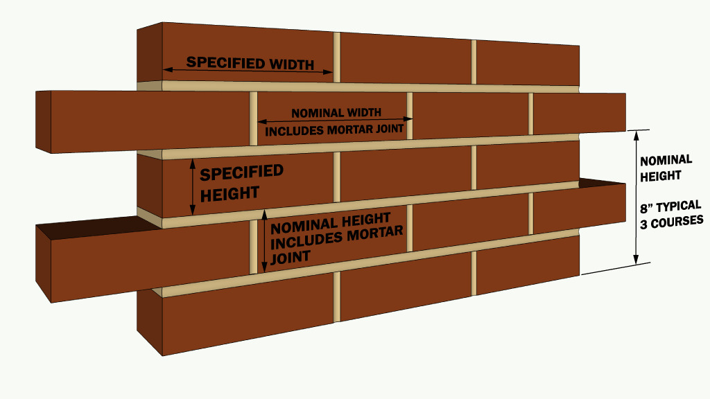
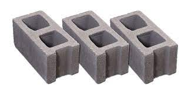
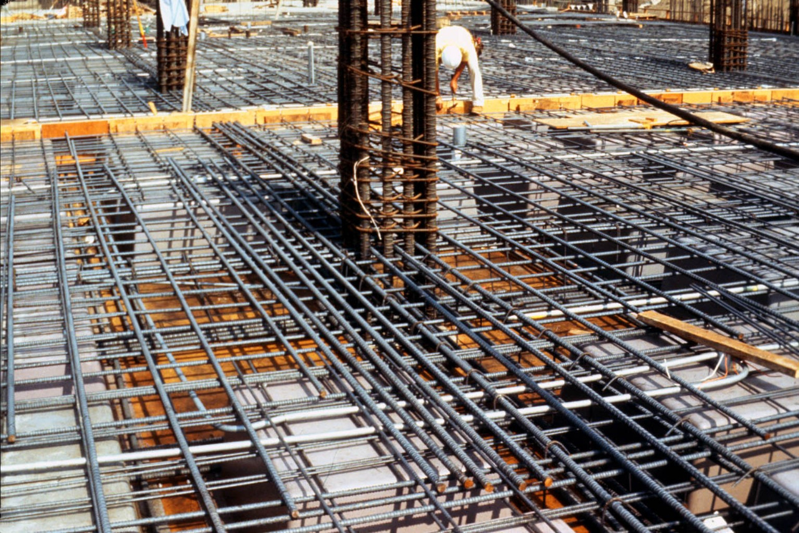
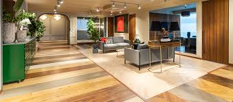
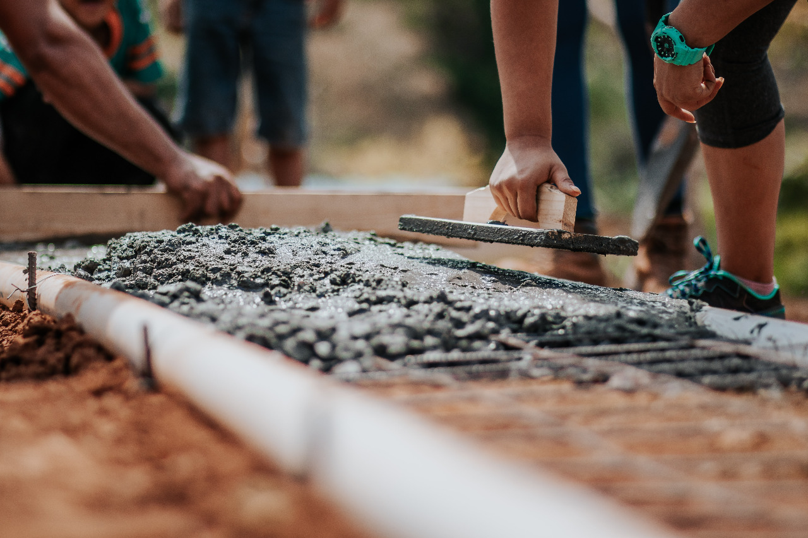

Plastering is the process of covering rough walls and uneven surfaces in the construction of houses and other structures with a plastic material, called plaster, which is a mixture of lime or cement concrete and sand along with the required quantity of water. Plastering is done to protect the surface of masonry from atmospheric influences, especially rain. It provides lateral stability by binding all bricks or stones and protects masonry joints. Plastering-Calculator
A brick Masonry is building material used to make walls, pavements and other elements in masonry Construction. Traditionally, the term brick referred to a unit composed of clay, but it is now used to denote rectangular units made of clay-bearing soil, sand, and lime, or concrete materials. The need to build highly durable high-rise structures was the motivation for fired brick manufacturing. bricks Masonry have been widely preferred as a building material because of their high compressive strength, durability, fire and weathering resistance, and thermal and sound insulation. A lot of variety exists in RCC and there are different types of RCC Bricks-Masonry-Calculator
A concrete block is primarily used as a building material in the construction of walls. It is sometimes called a concrete Block unit (CMU). A concrete block is one of several precast concrete products used in construction. Concrete blocks can be solid or hollow with two or three cores or voids. Concert blocks are lightweight generally concrete blocks are light and common in various sizes a standard concert block is 600mm x 250mm x 150mm is equivalent to by about 8 red concrete-block, the weight of one single block is about 14kg where is 8 red concrete-block is 36kg that is more than double.
A steel used un building structure fabricated with steel for the internal support and for exterior cladding, as opposed to steel framed buildings which generally use other materials for floors, walls, and external envelope. Steel buildings are used for a variety of purposes including storage, work spaces and living accommodation. They are classified into specific types depending on how they are used. Steel is used because it binds well to concrete, has a similar thermal expansion coefficient and is strong and relatively cost-effective. Reinforced concrete is also used to provide deep foundations and basements and is currently the world's primary building material.
A floor is the bottom surface of a room. Flooring is the general term for a permanent covering of a floor, or for the work of installing such a floor covering. A lot of variety exists in flooring and there are different types of floors 1. Mud floor 2. Brick floor 3. Tile floor 4. Flagstone floor 5. Cement and Concrete Floor
The term PCC stands for plain cement concrete. The mixture of cement, fine aggregate (sand) and coarse aggregate are generally called plain cement concrete (PCC). Plain Cement Concrete (PCC) is also called as Cement Concrete (CC) or Blinding Concrete. It is used for leveling, bedding for footings, grade slabs, concrete roads etc. PCC is used to provide non-porous, rigid, impervious, firm and leveled bed for laying RCC, where earth is soft and yielding. PCC can be use over brick flat soling or without brick flat soling. PCC also used as filler like lump concrete; this is a mix of PCC and boulder. It consists of cement, sand and coarse aggregates mixed with water in the specified proportions.
Paint is a liquid or mastic material that can be applied to surfaces to colour, protect and provide texture. They are usually stored as a liquid and dry into a thin film after application. Paints be categorised decorative, are applied on site, or industrial, applied in factories as part of the manufacturing process. Paint Calculator helps you calculate the area to be painted and gives you an estimate of the required amount of paint. Paints can be applied with a brush or roller, or by dipping, flowcoating, spraying, hot spraying, electrostatic spraying, airless spraying, electrodeposition, powder coating, vacuum impregnation, immersion, and so on.